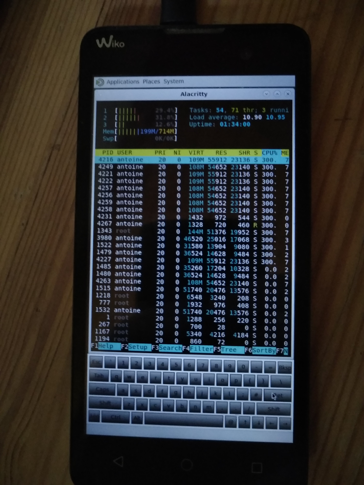

Wiko Lenny 2 (wiko-lenny2)
|

It Works! |
|
| Manufacturer | Wiko |
|---|---|
| Name | Lenny 2 |
| Codename | wiko-lenny2 |
| Released | 2015 |
| Category | testing |
| Original software | Android 5.1 |
| postmarketOS kernel | 3.10.72 |
| Hardware | |
| Chipset | MediaTek MT6580 |
| CPU | Quad-core 1.3 GHz Cortex-A7 |
| GPU | Mali-400 MP2 |
| Display | 480×854px, 5.0" |
| Storage | 4 GB |
| Memory | 768 MB |
| Architecture | armv7 |
| Unixbench Whet/Dhry score | 477.6 |
{kind=link}
| USB Networking |
Works
|
|---|---|
| Flashing |
Partial
|
| Touchscreen |
Works
|
| Display |
Works
|
| WiFi |
|
| FDE |
|
| Mainline |
Broken
|
| Battery |
|
| 3D Acceleration |
Partial
|
| Audio |
Broken
|
| Bluetooth |
|
| Camera |
Broken
|
| GPS |
|
| Mobile data |
|
| SMS |
|
| Calls |
|
| USB OTG |
Broken
|
| NFC |
|
| Accelerometer |
|
|---|---|
| Magnetometer |
|
| Ambient Light |
|
| Proximity |
|
| Hall Effect |
|
| Ir TX |
|
|---|---|
| TrustZone |
|
Status
- screen
- has a working framebuffer, so it's possible to display stuff. No DRM as with a lot of older kernels, that means no phosh or sway, I guess.
- audio
-
BADLY BROKEN
,
alsamixerormpvseem to make the kernel crash. The phone reboots afterwards - maybe something non-alsa could work better?
- wifi
-
the network interface doesn't appear in
ifconfig.
- battery reading
-
broken,
-
acpitells the battery is fully empty. -
upower --dumpgenerates a segfault:
(upower:1682): UPower-WARNING **: 11:58:54.107: Cannot connect to upowerd: Error calling StartServiceByName for org.freedesktop.UPower: Process org.freedesktop.UPower received signal 11
-
- desktop environment
- Mate seems to work best. Mostly because it doesn't die from segfaults. It is missing the bottom panel though.
-
Weston works, but for some reason, it sometimes fails to start:
sudo rc-service lightdm restart. - Plasma Mobile only shows a mouse cursor on a black background, with loads of segfaults.
- Sway and Phosh require DRM support, so that's a no-go.
- XFCE4 fails to start, for some reason.
- i3 could be a possible alternative. Untested since the lack of external keyboard would make it useless.
- games
- chocolate doom works on software rendering
{kind=link}
{kind=link}
Contributors
Maintainer
Users owning this device
How to enter flash mode
First, boot phone into recovery mode. To do that, press the Volume Up button while powering on the phone. When the logo appears, you can release any button held.
Once in the recovery mode, navigate to "reboot to bootloader" using the volume keys.
In my case, I had to validate pressing the
Power
button twice, then the power up button.
Installation
The kernel and the initramfs can be flashed using
pmbootstrap flasher flash_kernel
. Flashing the rootfs
requires a workaround
. I recommend flashing the rootfs to the
userdata
partition, as it is larger than
system
.
Mainlining
downstream kernel sources, for reference
https://www.wikogeek.com/index.php?telephone=LENNY2®ion=EUROPE&version=%25
See also
- Device package
- Kernel package
- pmaports!773 Initial merge request